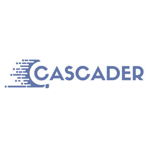

Trade Mark Journal No.2025/034 22 August 2025
UK00004248287 12 August 2025 (9,41,42,44)

- Class 9
- Scientific, photographic, cinematographic, optical, weighing, measuring, detecting and testing apparatus and instruments, all for detecting, screening, diagnosing and managing eye diseases as well as other diseases by imaging the eye, to support the provision of medical and healthcare services and to enable the assessment and analysis of patients for the purpose of clinical decision support and patient management; computer hardware for medical or health use; computer software and computer software using artificial intelligence and machine learning for medical or health use; computer software and computer software using artificial intelligence and machine learning for modelling of scientific data for research purposes; computer software and computer software using artificial intelligence and machine learning for the provision of optical medical and healthcare services, ophthalmic services, ophthalmic diagnostic services and services involving oculomics; computer software and computer software using artificial intelligence and machine learning for detecting, screening, diagnosing and managing eye diseases as well as other diseases by imaging the eye, to support the provision of medical and healthcare services and to enable the assessment and analysis of patients for the purpose of clinical decision support and patient management; software as a medical device (SaMD); software as a medical device (SaMD) for detecting, screening, diagnosing and managing eye diseases as well as other diseases by imaging the eye; computer systems incorporating artificial neural networks to support the provision of medical and healthcare services and to enable the assessment and analysis of patients for the purpose of clinical decision support and patient management; apparatus and instruments for recording, transmitting, reproducing or processing sound, images or data to support the provision of medical services and healthcare and to enable the assessment and analysis of patients for the purpose of clinical decision support and patient management.
- Class 41
- Training and education services relating to artificial intelligence software for use in the provision of medical and healthcare services; training and education services relating to optical medical services, ophthalmic services, ophthalmic diagnostic services and oculomics. .
- Class 42
- Scientific and technological services, research and design; research, design and development of computer hardware and software; research, design and development for programming of computer software and computer software using artificial intelligence and machine learning for medical or health use, for modelling of scientific data for research purposes, for the provision of optical medical and healthcare services, ophthalmic services and ophthalmic diagnostic services and for detecting, screening, diagnosing and managing eye diseases as well as other diseases by imaging the eye, to support the provision of medical services and healthcare and to enable the assessment and analysis of patients for the purpose of clinical decision support and patient management; scientific and medical research into optical medical services, ophthalmic services, ophthalmic diagnostic services and oculomics; scientific and medical research into the detection, screening, diagnosis and management of eye diseases as well as other diseases by imaging the eye; software as a service (SaaS) and software as a service (SaaS) using artificial intelligence and machine learning for medical or health use; software as a service (SaaS) and software as a service (SaaS) using artificial intelligence and machine learning for modelling of scientific data for research purposes; software as a service (SaaS) and software as a service (SaaS) using artificial intelligence and machine learning for the provision of optical medical services and healthcare, ophthalmic services, ophthalmic diagnostic services and services involving oculomics; software as a service (SaaS) and software as a service (SaaS) using artificial intelligence and machine learning for detecting, screening, diagnosing and managing eye diseases as well as other diseases by imaging the eye, to support the provision of medical services and healthcare and to enable the assessment and analysis of patients for the purpose of clinical decision support and patient management. .
- Class 44
- Medical and healthcare services; medical and healthcare care services relating to vision care and eye care; medical care and healthcare services relating to the provision of optical medical services, ophthalmic services, ophthalmic diagnostic services and services involving oculomics; advisory and consultancy services relating to all of the aforementioned services.
Cascader Ltd
Representative: Marriott Harrison LLP